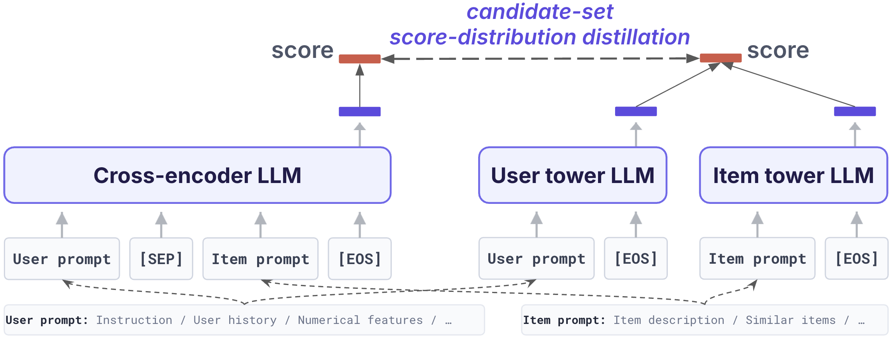
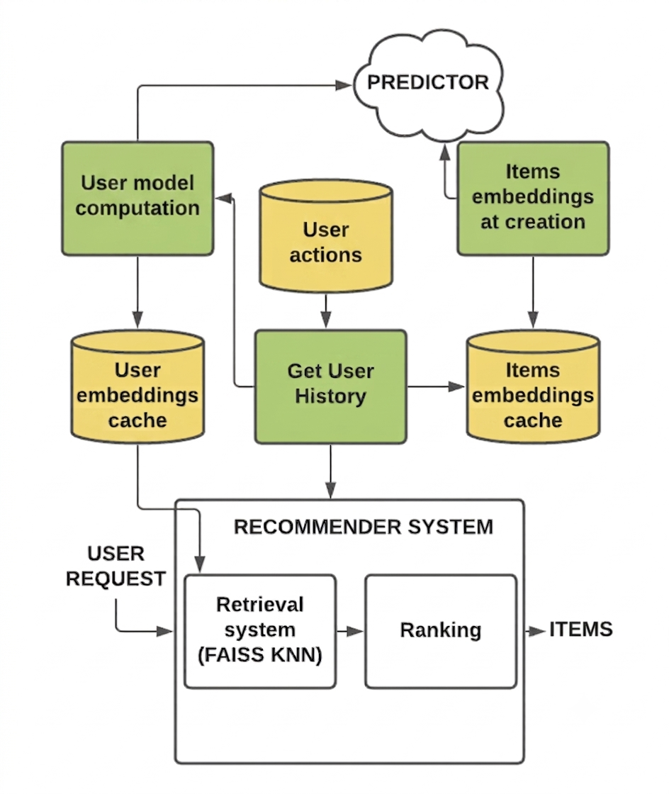

The Case Against Generation for Retrieval: Discriminative LLMs as Two-Tower Retrievers
TL;DR
- "The Case Against Generation for Retrieval" (arXiv 2607.25346; Zhe Xu et al., 20 authors listed alphabetically, Meta) argues that for web-scale retrieval/recommendation, LLMs should be discriminative representation backbones inside the classic two-tower architecture, not generative engines emitting semantic item IDs — sidestepping autoregressive decoding latency and token-to-item grounding failures entirely.
- The recipe: a cross-encoder teacher scoring relevance as the yes/no next-token logit difference plus a user-conditioned next-token-prediction auxiliary loss; a two-tower student with a shared Qwen3-0.6B encoder, EOS pooling, cross-dataset mid-training, candidate-set KL distillation from the teacher, and one Coconut-style latent reasoning step in the user tower only (item embeddings stay precomputable).
- On the TIGER Amazon benchmarks, the 0.6B cross-encoder beats OneRec-Think (8B backbone) on 10/12 dataset–metric combos (Sports R@10 +64.3%); the two-tower student wins R@10 on all three datasets. In production: NE parity with a tuned DLRM using 0.5% of the training data (CE: 0.15%), +5.5% NE on tail items, and — the standout — a frozen LLM-native model still beats the daily-retrained DLRM baseline three days later (+2.23%) while a frozen DLRM decays to −4.30%.
Why this matters
Generative retrieval (TIGER, OneRec, semantic IDs) has been the fashionable answer to "how do LLMs do retrieval", and it drags in autoregressive decoding on the serving path plus a token→item translation step that fails outside the model. This paper is a large industrial data point for the opposite position — one that generalizes well beyond recommender systems. The interesting results are the production ones, because they isolate why text-grounded representations win operationally: staleness resilience (a stable token vocabulary vs. ephemeral item-ID embeddings means the model doesn't rot between retrains), sample efficiency (parity at 0.5% of the data), and tail generalization (+5.5% NE on the bottom-15%-engagement items, where ID-based models have nothing to memorize). For this tracker's memory/context thread, the architectural pattern — expensive joint-attention scorer as teacher, factorized dot-product retriever as student, latent (never decoded) reasoning only on the query side — is a template that transfers directly to agent memory and RAG stacks.
The core idea
Keep the two-tower factorization that makes web-scale retrieval feasible — user embedding \(\mathbf{z}_u\), precomputed item embeddings \(\mathbf{z}_i\), score \(s_{\mathrm{TT}}(u,i)=\mathbf{z}_u^{\top}\mathbf{z}_i\), ANN search — but make both towers a shared decoder LLM used discriminatively, and close the expressiveness gap to joint-attention models with distillation. The teacher is a cross-encoder that reads a prompt containing both user history and item text and answers yes/no; its relevance score is the verbalized logit difference (exact LaTeX from the paper):
trained with an in-batch softmax contrastive loss plus a user-conditioned NTP auxiliary — predicting the item's text given the user context, so item semantics are learned in relation to preferences rather than as unconditional LM smoothing:
The student absorbs the teacher's ranking behavior over each candidate set via temperature-scaled KL on score distributions:
where \(q_{\mathrm{CE}}\) and \(p_{\theta}^{\mathrm{TT}}\) are softmaxes of teacher/student scores over candidate set \(\mathcal{C}_u\) at temperature \(T\).

Figure 1 from the paper: the teacher–student LLM-native retrieval framework.How it works
Student enhancements, each ablated: (1) a shared encoder for user and item text embeds both in one semantic space and halves trainable parameters; (2) EOS pooling — the final token's hidden state under causal attention as the sequence embedding — beats mean pooling; (3) cross-dataset transfer: mid-train the shared encoder on all recommendation datasets (\(\mathcal{L}_{\mathrm{mid}}=\frac{1}{R}\sum_r \mathcal{L}^{(r)}_{\mathrm{con}}\)), then fine-tune per target; (4) CE2TT distillation as above; (5) latent reasoning in the user tower only: encode the user text without EOS, take the last hidden state as a continuous thought token \(\mathbf{c}_u\), re-feed \([x_u; \mathbf{c}_u; \mathrm{EOS}]\), and pool the new EOS state (exact from the paper):
\(\mathbf{c}_u\) is never decoded to a word — it's one extra continuous refinement step, and because it lives on the user side only, item embeddings remain precomputable.
# LLM-native two-tower retrieval: train + serve
# Teacher (cross-encoder, Qwen3-0.6B)
for (user u, item i) batches:
prompt = Prompt(x_u, x_i) -> next-token logits
s_CE = logit("yes") - logit("no")
L = contrastive(s_CE, in-batch negatives)
+ lambda * NTP(item tokens | user context)
# Student (two-tower, SHARED Qwen3-0.6B encoder)
mid-train on all R datasets (contrastive), fine-tune on target
for user u with candidate set C_u:
z_u = EOS-pool( g([x_u ; c_u ; EOS]) ) # c_u = latent thought token
z_i = EOS-pool( g(x_i) ) # plain, precomputable
L = contrastive(z_u.z_i) + T^2 * KL( softmax(s_CE/T) || softmax(z_u.z_i/T) )
# Serving (decoupled, nearline + online)
on item create/update: embed item, index in real time (ANN)
periodically: re-embed users from fresh histories -> KV store
online request: fetch z_u (ms) -> kNN over item index -> rankers
Serving is where the "case against generation" bites: one user-side encoding pass (+1 cached decoding step if latent reasoning is on) and a parallelizable maximum-inner-product search, vs. prefill + \(N_{\mathrm{gen}}-1\) inherently sequential decoding steps for generative retrieval — plus whatever machinery maps generated tokens back to valid items.
Results
- Public benchmarks (Amazon Beauty/Sports/Toys, TIGER protocol, Qwen3-0.6B): the CE teacher is the new SoTA on 10/12 combos — vs. OneRec-Think on its own reported table, with a 13x smaller backbone (0.6B vs. 8B): Sports R@10 0.0677 (+64.3%), Toys R@10 0.1223 (+53.5%). The TT student beats ORT on R@10 everywhere (+4.3/+31.6/+35.3%) though NDCG is mixed (Beauty N@5 −32.9%).
- Teacher ablation: yes/no head alone is dataset-dependent (helps Beauty/Toys, hurts Sports); adding user-conditioned NTP fixes the inconsistency and wins all 12 combos — the auxiliary objective is what makes verbalized scoring reliable.
- Student ablation: CE2TT distillation is the most consequential component (removing it: R@10 −13.3%/−23.1%/−8.0%); transfer learning and latent reasoning give smaller but uniformly positive R@10 gains.
- Production (internal, relative NE): TT matches the tuned DLRM retriever with 0.5% of training data; CE with 0.15%, and CE scales better with data (2x/3x data: +1.59/+2.19% vs. DLRM's +1.30/+1.80%). Segment analysis: +5.5% NE on tail items, +2.3% on head users. Staleness: frozen DLRM decays −2.68%/−4.30% at ds+2/ds+3; frozen LLM-native CE holds +2.21%/+2.23% vs. the daily-retrained fresh baseline. Serving optimizations (FSQ soft tokens for numeric features, depth pruning, vocab pruning, FP8) net +19.7/+10.6/+2.0/+13.6% QPS at ~zero NE cost. Headroom: 4B backbone +1.90% NE, MoE +0.91%, latent reasoning +0.41%.

Figure 2 from the paper: intensive LLM inference is isolated off the online serving path.How it connects
- Zero-Mem: Generation-Free Agent Memory (tracked item) — the same thesis applied to agent memory: retrieval-shaped problems don't need generation on the hot path. Zero-Mem removes generation from memory reads; this paper removes it from candidate retrieval. Both trade expressive decoding for indexable, stale-tolerant structure.
- PageIndex: Vectorless, Chunk-Free Retrieval (tracked item) — the opposite corner of the design space: PageIndex drops embeddings in favor of LLM-navigated structure (reasoning at query time), while this paper doubles down on embeddings and moves all LLM reasoning offline/nearline. The latency-vs-flexibility trade is explicit: dot products in milliseconds vs. navigation depth.
- RAG Scaling Study: BM25 Overtakes Agentic Search at ~10M Tokens (tracked item) — same operational moral at corpus scale: as the index grows, cheap-per-query discriminative scoring beats clever-but-slow query-time computation. LLM-native two-tower is the trainable middle ground between BM25 and agentic search.
- Memory Decoder: Swappable Parametric Memory — complementary distillation directions: Memory Decoder distills a retriever into a parametric model; CE2TT distills a joint-attention scorer into a factorized retriever. Both show KL-matching a score distribution transfers ranking/lookup behavior across architecture classes.
Critical take
The production section is the paper's real evidence, and it's unusually concrete for an industrial report (staleness table, segment breakdowns, QPS itemization) — but it's all relative NE on an unnamed internal system, unverifiable and possibly cherry-picked across surfaces. On the public side, the headline comparison has an asymmetry worth noticing: baselines are copied from OneRec-Think's table (different training stacks), the CE "SoTA" is a ranker being compared in a retrieval table, and the actually-deployable TT student is mixed on NDCG — it retrieves well at K=10 but orders less well, which is fine for first-stage retrieval but weakens the rhetorical framing. The title oversells: this is the case against generation for first-stage retrieval at scale, not against generative recommenders broadly — reasoning-heavy reranking and cold-start explanation still favor generation, and their own headroom table shows the discriminative stack importing generation's tricks (latent reasoning +0.41% is modest). The 0.6B backbone choice is smart engineering, but it leaves open whether the two-tower bottleneck (a single dot product) caps what larger discriminative backbones can express — the +1.90% from a 4B CE suggests the ceiling is in the factorization, not the encoder. None of this undermines the operational argument, which I find convincing: stable token vocabularies beat ephemeral ID embeddings on staleness, data efficiency, and tails.
If you remember three things
- Discriminative beats generative on the retrieval serving path: yes/no logit-difference scoring + two-tower factorization gives millisecond ANN retrieval with no decoding loop and no token→item grounding, while matching or beating an 8B generative recommender with a 0.6B encoder.
- The transferable recipe: shared encoder + EOS pooling; user-conditioned NTP to stabilize the verbalized teacher; candidate-set KL distillation (the single most important component, up to −23% R@10 without it); latent reasoning only on the query side so the index stays precomputable.
- Text grounding is an operational superpower: parity with a tuned DLRM at 0.5% of the data, +5.5% on tail items, and near-zero decay over three days frozen (vs. −4.3% for a frozen DLRM) — because the representation vocabulary doesn't churn with the item catalog.